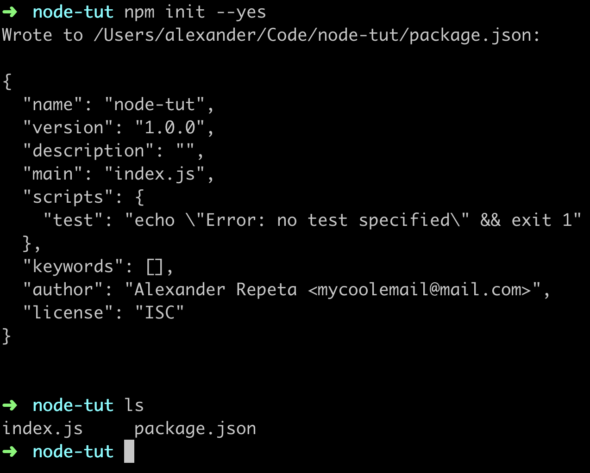
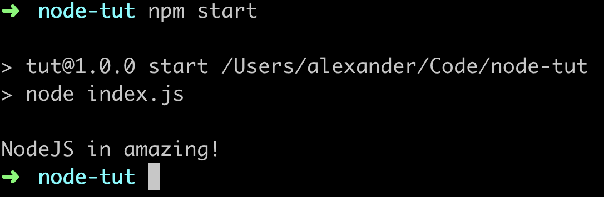

Пакетний менеджер npm
Щоб використовувати все різноманіття інструментів (або пакетів) Node.js, нам необхідна можливість встановлювати і керувати ними. Для цього створений NPM (node package manager) - пакетний менеджер Node.js. Він встановлює потрібні пакети і забезпечує зручний інтерфейс для роботи з ними.
NPM складається з трьох основних компонентів:
- Сайт npmjs.com - використовується для пошуку та ознайомлення з документацією пакетів.
- Інтерфейс командного рядка (CLI) - запускається з терміналу і надає набір команд для роботи з реєстром і пакетами. Дозволяє створювати скрипти для запуску в терміналі.
- Реєстр пакетів (registry) - велика загальнодоступна база даних інструментів розробки (пакетів).
Пакет (package) - невелика JavaScript бібліотека, що вирішує специфічне завдання. Пакети пишуть самі розробники і діляться зі спільнотою. Такий підхід спрощує життя, тому що не потрібно винаходити колесо, всі колеса вже давно лежать на полицях реєстру і готові до використання.
ЦІКАВО: Пакети абстрагують реалізацію функціоналу, надаючи розробнику зручний інтерфейс. Це робить код чистішим, читабельнішим і дозволяє простіше його підтримувати.
Команди NPM
Відразу перелічимо основні команди і будемо послідовно використовувати і розглядати в деталях.
- npm init - ініціалізує npm в проекті і створює файл package.json
- npm install - встановлює всі залежності, перелічені в package.json
- npm list --depth=0 - виведе в терміналі список локально встановлених пакетів з номерами їх версій, без залежностей
- npm install [package-name] - встановить пакет локально у папку node_modules
- npm uninstall [package-name] - видалить пакет, встановлений локально і оновить package.json
- npm start і npm test - запустить скрипт start або test, розташований в package.json
- npm run [custom-script] - запустить кастомний скрипт, розташований в package.json
- npm outdated - використовується для пошуку оновлень, виявить сумісні версії програмно і виведе список доступних оновлень
- npm update - оновить всі пакети до максимально дозволеної версії
Ініціалізація проекту
Кожен проект починається зі створення файлу package.json - він відстежує залежності, містить службову інформацію, дозволяє писати npm-скрипти і слугує інструкцією під час створення нового проекту на основі вже готових налаштувань. Файл package.json можна створити npm-командою init, що ініціалізує проект в цій папці.
npm init
Вам буде запропоновано ввести назву проекту, версію, опис тощо. Можна просто натискати Enter доти, доки не буде створений package.json і розміщений в папці проекту. Щоб не натискати Enter, пропускаючи порожні поля, використовується команда init з прапорцем --yes. Прапорець - додаткове налаштування для команди.
npm init --yes
ЦІКАВО: У кожного прапорця є псевдонім - його скорочений запис. Псевдонім прапорця --yes - -y, тому команди npm init --yes і npm init -y роблять одне і те ж.
Буде створено package.json зі значеннями за замовчуванням. Щоб встановити ці значення, виконайте в терміналі послідовно наступні команди, підставивши своє ім'я та пошту.
npm config set init.author.name "YOUR_NAME" npm config set init.author.email "YOUR_EMAIL"
Файл package.json можна редагувати вручну або виконати npm init ще раз. Якщо відкрити package.json в редакторі, він буде виглядати приблизно так. Це всього лише метадані про проект.
package.json
{
"name": "node-tut",
"version": "1.0.0",
"main": "index.js",
"scripts": {
"test": "echo \\"Error: no test specified\\" && exit 1"
},
"author": "Alexander Repeta <mycoolemail@mail.com>",
"license": "ISC",
"keywords": [],
"description": ""
}
npm-скрипти
Скрипти дозволяють запускати для виконання встановлені пакети. Використовуючи npm-скрипти, можна створювати цілі системи збирання проекту. Автоматизуємо запуск index.js. Для цього у файлі package.json в полі scripts додамо скрипт запуску start.
package.json
{
"scripts": {
"start": "node index.js"
}
}
Тепер ми можемо запустити його в терміналі командою npm start.
УВАГА: Якщо створити скрипт з будь-яким іншим ім'ям, крім start або test, він буде запускатися як npm run ім'я-скрипта - не забудьте run. Ознайомтесь з документацією - How npm handles the "scripts" field.
Встановлення пакетів
Одна з можливостей, які надає npm - встановлення пакетів, які витягуються з реєстру і розпаковуються в папку node_modules в корені проекту. Після створення файлу package.json, можна додати залежності в проект.
Залежністю називають npm-пакет, який використовується у розробці. Це різноманітні утиліти і бібліотеки. Встановимо бібліотеку validator.js для валідації рядків, наприклад, введення користувача в поля форми/
УВАГА: Не додавайте папку node_modules в систему контролю версій, у всіх розробників вона буде своя. Якщо ви використовуєте Git, не забувайте додати папку node_modules у файл .gitignore.
Зверніть увагу на створений файл package-lock.json - це журнал знімків дерева залежностей проекту. Він гарантує, що команда розробників використовує однакові версії залежностей. NPM автоматично оновлює його під час додавання, видалення та оновлення пакетів.
В package.json з'явилася нова залежність в полі dependencies. Це означає, що validator версії 11.1.0 був встановлений як залежність і готовий до роботи. Пакети постійно оновлюються, ваша версія може відрізнятися.
package.json
{
"dependencies": {
"validator": "^11.1.0"
}
}
Щоб отримати інтерфейс пакета в Node.js-коді, необхідно викликати функцію require("ім'я-модуля"), передаючи аргументом їй ім'я модуля без визначення шляху - це називається абсолютний імпорт. Шлях не потрібен, оскільки за замовчуванням пошук модуля буде відбуватися в папці node_modules. Результатом свого виконання функція поверне інтерфейс модуля - об'єкт з методами або просто функцію - залежить від пакета.
index.js
const validator = require("validator");
const validateEmail = email => {
return validator.isEmail(email);
};
console.log(
"Is mango@mail.com a valid email?: ",
validateEmail("mango@mail.com")
);
console.log(
"Is Mangozedog.com a valid email?: ",
validateEmail("Mangozedog.com")
);
Виконавши в терміналі npm start, отримаємо.
Is mango@mail.com a valid email?: true Is Mangozedog.com a valid email?: false
Видалення пакетів
Припустимо, що версія validator, встановлена в попередньому прикладі, викликає проблеми з сумісністю. Ми можемо видалити цей пакет і поставити старішу версію.
npm uninstall validator
Встановлення певної версії пакета
Тепер встановимо потрібну версію validator. У команді встановлення номер версії вказується після символу @.
npm install validator@1.0.0
ЦІКАВО: Встановлення пакетів певної версії використовується в комерційних проектах для того, щоб гарантувати роботу кодової бази і можливість довгострокової підтримки. Ви можете встановлювати найостанніші версії.
Типи залежностей
Уявіть торт. Для його приготування шефу потрібні продукти, саме вони увійдуть до складу торта. Але для приготування потрібні будуть також інструменти на зразок мисок, ложок, лопаток тощо. А ще на кухні є столи і печі, холодильники тощо - те, що використовується для приготування будь-якої страви, загальні інструменти, які є на кухні.
Те ж саме і з залежностями проекту - деякі будуть використані у фінальному продукті, інші необхідні тільки на стадії розробки, а є й такі, які необхідно використовувати, незалежно від проекту.
Саме для цього команди npm install і npm uninstall мають три прапорці.
- -save - вказує, що додається залежність, яка увійде до фінального продукту. Пакет буде встановлений локально, в папку node_modules і буде доданий запис в поле dependencies в package.json.
- -save-dev - вказує, що додається залежність розробки. Пакет буде встановлений локально в папку node_modules, і буде доданий запис в поле devDependencies в package.json.
- -global - вказує, що додається глобальна залежність, тобто інструмент, який доступний для будь-якого проекту. Пакет буде встановлений глобально (в систему).
ЦІКАВО: Якщо не вказувати прапорець, буде використаний --save за замовчуванням. Видаляючи пакет, необхідно вказувати правильний прапорець, такий самий, що й для встановлення. Не встановлюйте пакети глобально, якщо ви працюєте на проекті з іншими розробниками.
Управління версіями пакетів
Пакети мають пов'язаний з ними номер версії. Номери версій відповідають стандарту SemVer .
- npm outdated - використовується для пошуку оновлень, виявить сумісні версії програмно.
- npm update - оновить всі пакети до максимально дозволеної версії.
- npm update [ім'я-пакета] - оновить зазначений пакет.
ЦІКАВО: Якщо ви не довіряєте машинам або вам потрібна певна версія пакету, можна відкрити package.json і вручну поміняти версії пакетів, після чого виконати npm install.
Управління кешем
Після встановлення пакета npm зберігає його копію в кеші, тому під час наступного встановлення, вам не потрібно знову завантажувати його з інтернету. Кеш зберігається в папці .npm вашого домашнього каталогу.
Ця папка з часом засмічується старими пакетами і її корисно іноді очищати, не дуже часто (декілька разів на рік). Кешування корисне, тому що скорочує час встановлення вже використаних пакетів.
npm cache clean